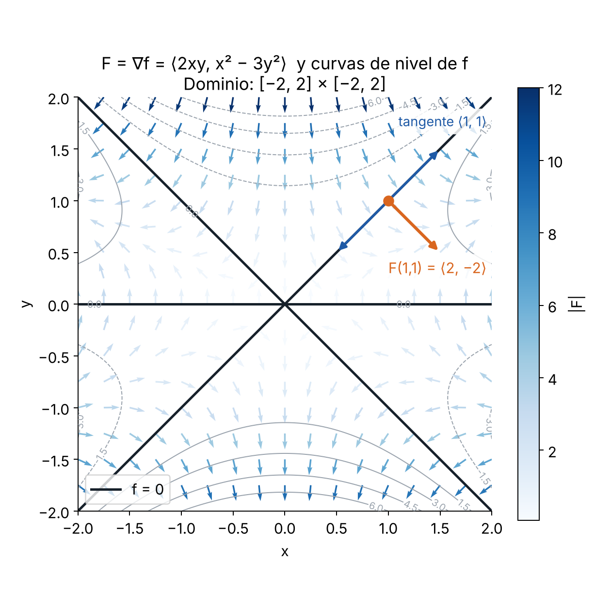
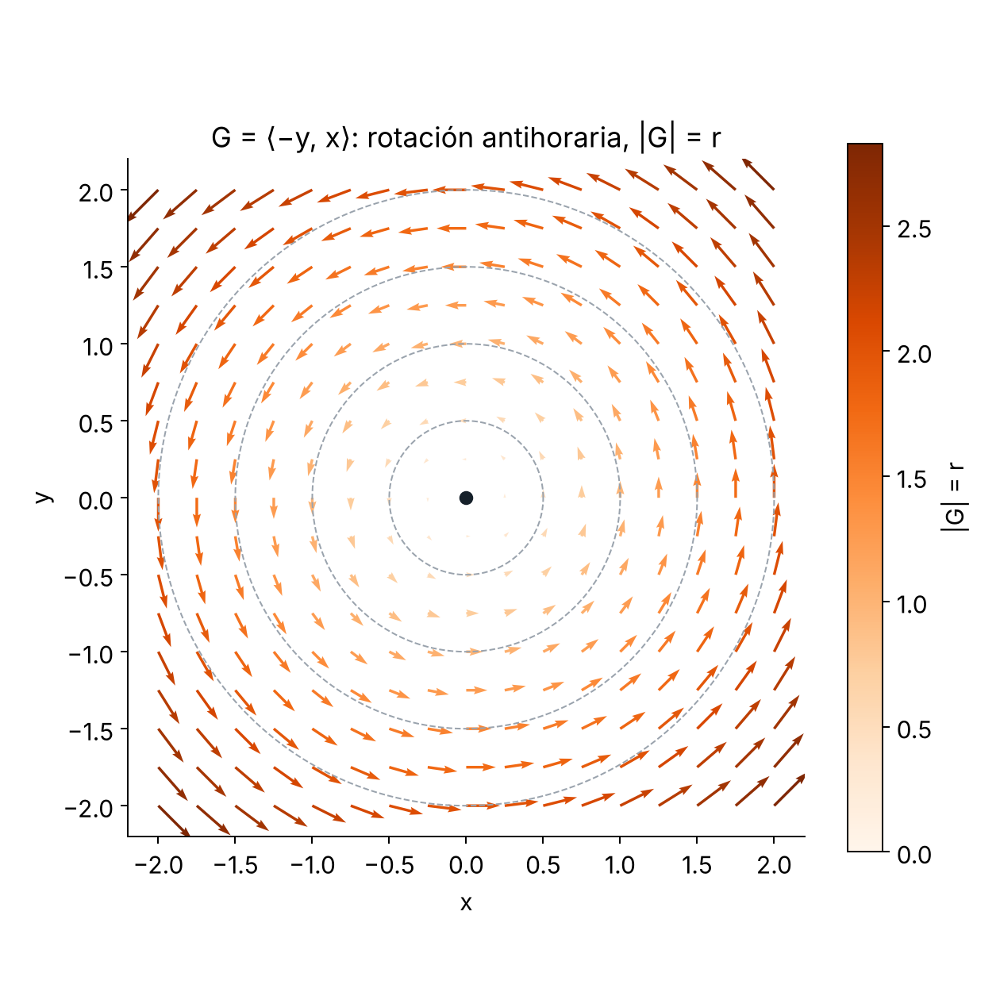
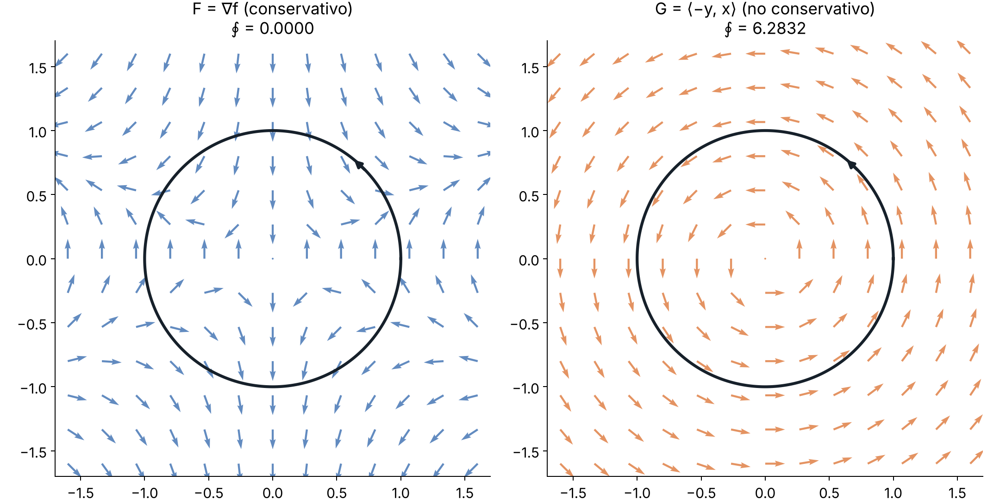

Problema 3 · Cálculo Vectorial · La Salle · Pareja 3
Arrastra el punto naranja (o haz clic) para mover el punto de evaluación.
flechas del campo (dirección; más oscuro = más grande)vector en el puntocurva de nivel f = 0tangente / camino
Campo
En el punto
Punto
Vector del campo
Magnitud
Tangente a la curva de nivel
Vector · tangente
¿Es un gradiente? (Clairaut)
∂P/∂y en el punto
∂Q/∂x en el punto
Mostrar
r =1.00
Gráficas del ejercicio
Hechas con Python y Matplotlib. Dominio de la gráfica: [−2, 2] × [−2, 2].

Inciso (b). F = ∇f = ⟨2xy, x² − 3y²⟩ con las curvas de nivel de f. Las líneas negras son f = 0; la flecha naranja F(1,1) = ⟨2, −2⟩ es perpendicular a la recta y = x.

Inciso (c). G = ⟨−y, x⟩ gira en sentido antihorario y su tamaño es r. No es un gradiente: ∂P/∂y = −1 ≠ 1 = ∂Q/∂x.

Inciso (d). Trabajo en la circunferencia x² + y² = 1: 0 para F (conservativo) y 2π para G (no conservativo).